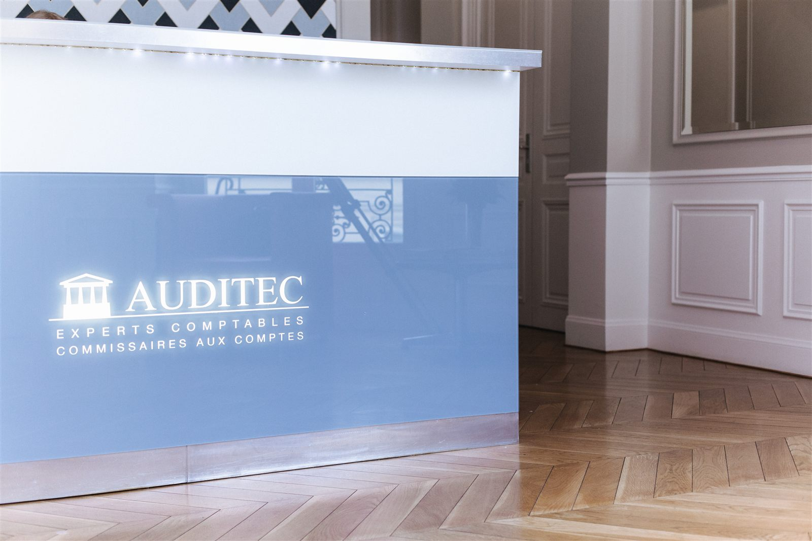
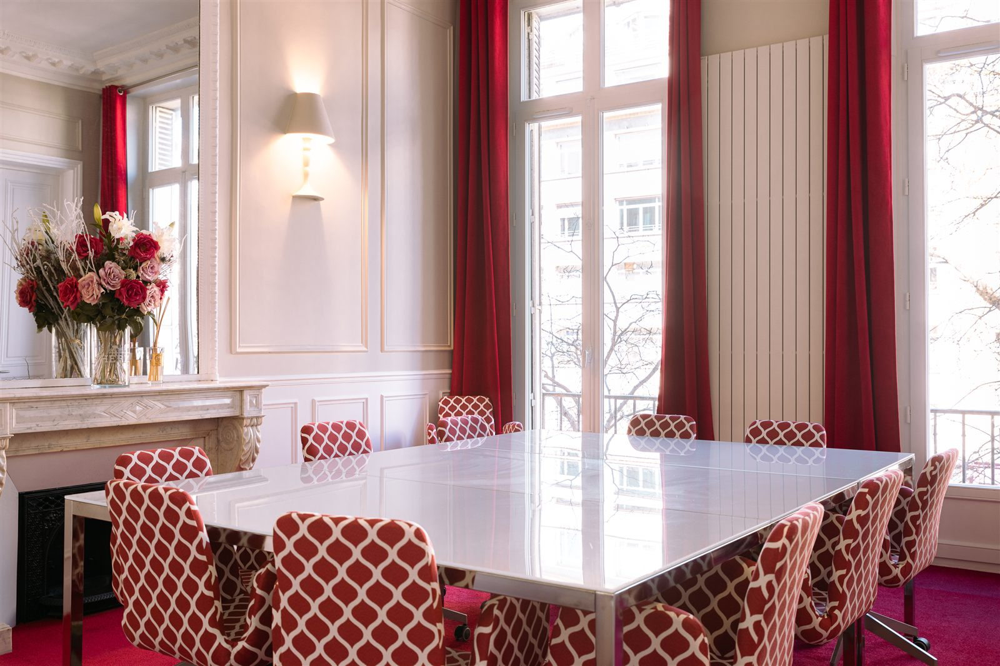
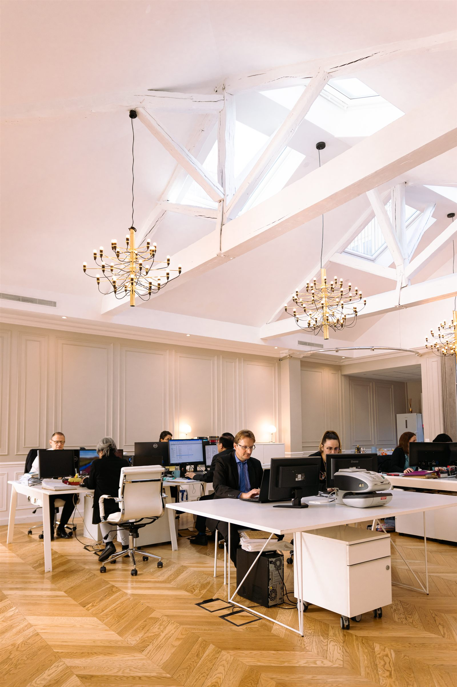
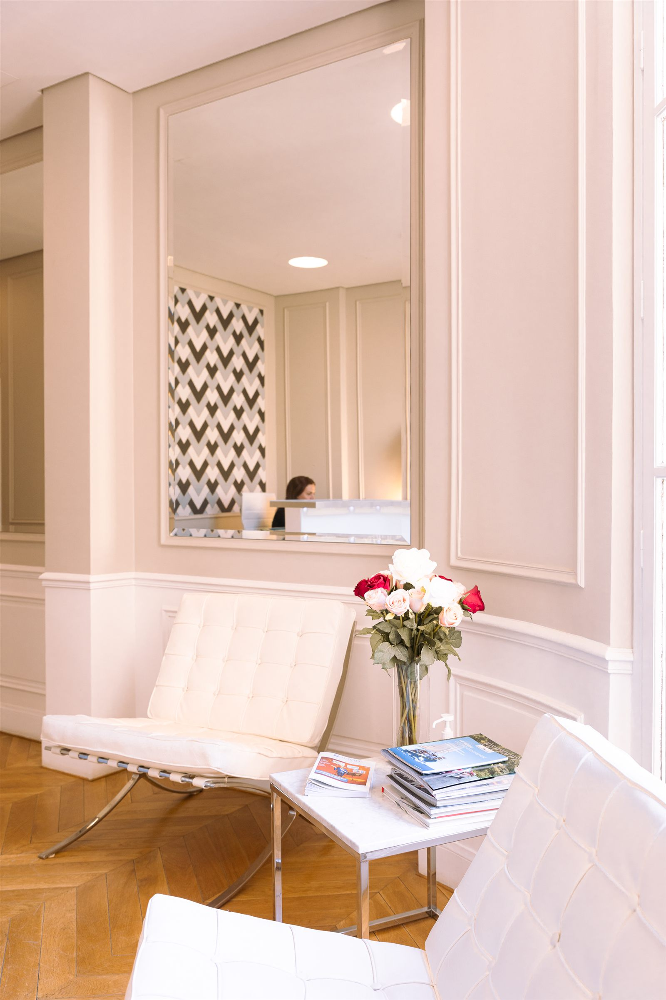
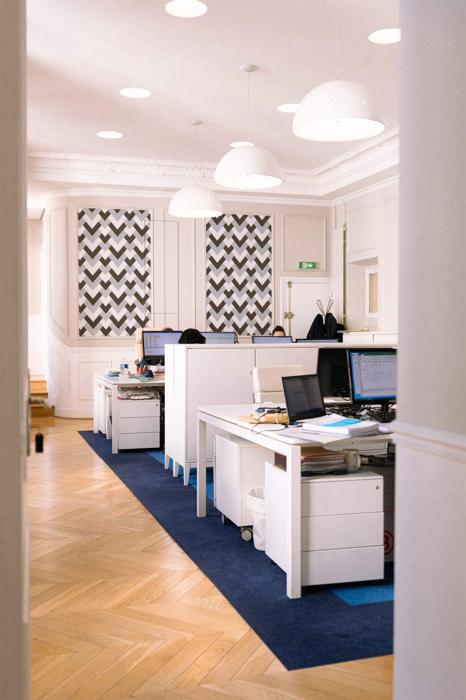

Trois cabinets, un seul groupe.
Depuis 1976, le cabinet accompagne les dirigeants de PME françaises et les filiales de groupes internationaux. En 2025, Auditec, Expertica et le cabinet Touchais et Associés fusionnent pour former un groupe unique.
Au cœur de Paris.





Une expertise reconnue par la profession.
Des visages, pas une signature anonyme.
Chaque pôle d'expertise est porté par des associés et responsables identifiés, vous savez toujours à qui vous parlez. La liste complète des associés sera mise à jour dès réception des photos et intitulés définitifs.
Photo et fiche à titre d'exemple de mise en page, en attendant la liste complète des associés et leurs photos.
Trois adresses en Île-de-France.
Chaque cabinet dispose de sa propre page, utile pour vos recherches locales et nos fiches Google Business.
Voir nos bureauxCinquante ans aux côtés des dirigeants.
Un cabinet indépendant, né à Paris, qui a grandi avec ses clients et s'est rapproché d'autres cabinets pour mieux les accompagner.
- 1976
Création du cabinet à Paris
Auditec s'installe comme cabinet d'expertise comptable et de commissariat aux comptes, au service des PME et des filiales de groupes internationaux.
- 2025
Un groupe de trois cabinets
Auditec, Expertica et le cabinet Touchais et Associés se rapprochent. Le groupe réunit ses expertises et ses équipes sur trois adresses en Île-de-France.
- Aujourd'hui
Cinq pôles, une seule vision
Audit, conseil comptable et fiscal, social, juridique et gestion de patrimoine travaillent sur un même dossier : le vôtre.
Ce que vous pouvez attendre de nous.
Un interlocuteur identifié
Vous savez toujours qui suit votre dossier, et vous le joignez directement.
Des délais tenus
Vos déclarations et vos comptes sont remis dans les délais convenus dans la lettre de mission.
Des chiffres utiles
Des tableaux de bord lisibles, pour décider en cours d'année et pas seulement à la clôture.
Le secret professionnel
Vos informations restent confidentielles, conformément aux règles de la profession.
Prêt à reprendre le contrôle de votre entreprise ?
Deux façons simples d'entrer en contact avec le cabinet.